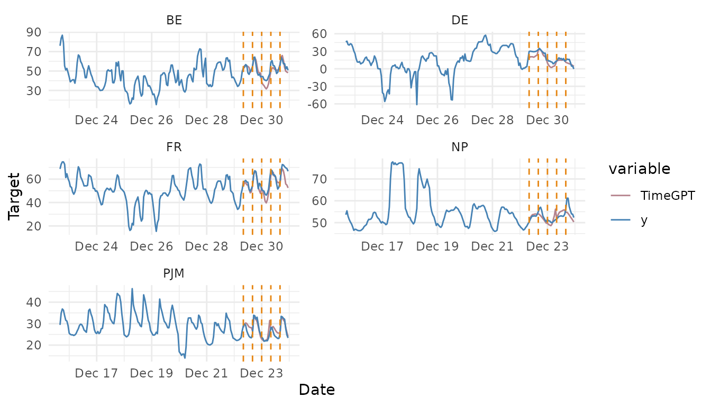

Cross-Validation
cross-validation.Rmd1. Time series cross-validation
Cross-validation is a method for evaluating the performance of a forecasting model. Given a time series, it is carried out by defining a sliding window across the historical data and then predicting the period following it. The accuracy of the model is computed by averaging the accuracy across all the cross-validation windows. This method results in a better estimation of the model’s predictive abilities, since it considers multiple periods instead of just one, while respecting the sequential nature of the data.
TimeGPT has a method for performing time series
cross-validation, and users can call it from nixtlar. This
vignette will explain how to do this. It assumes you have already set up
your API key. If you haven’t done this, please read the Get
Started vignette first.
2. Load data
For this vignette, we’ll use the electricity consumption dataset that
is included in nixtlar, which contains the hourly prices of
five different electricity markets.
df <- nixtlar::electricity
head(df)
#> unique_id ds y
#> 1 BE 2016-10-22 00:00:00 70.00
#> 2 BE 2016-10-22 01:00:00 37.10
#> 3 BE 2016-10-22 02:00:00 37.10
#> 4 BE 2016-10-22 03:00:00 44.75
#> 5 BE 2016-10-22 04:00:00 37.10
#> 6 BE 2016-10-22 05:00:00 35.613. Perform time series cross-validation
To perform time series cross-validation using TimeGPT,
use nixtlar::nixtla_client_cross_validation. The key
parameters of this method are:
-
df: The dataframe or
tsibblewith the time series data. It should include at least a column with the datestamps and a column with the observations. Default names for these columns aredsandy. If different, please specify their names. - h: The forecast horizon.
-
id_col: If the data contains multiple ids, as in
this case, please specify the column that contains them. If working with
a single series, leave it as it is by default (NULL).
- n_windows: The number of windows to evaluate. Default value is 1.
- step_size: The gap between each cross-validation window. Default value is NULL.
nixtla_client_cv <- nixtla_client_cross_validation(df, h = 8, id_col = "unique_id", n_windows = 5)
#> Frequency chosen: H
head(nixtla_client_cv)
#> unique_id ds cutoff y TimeGPT
#> 1 BE 2016-12-29 08:00:00 2016-12-29 07:00:00 53.30 51.79829
#> 2 BE 2016-12-29 09:00:00 2016-12-29 07:00:00 53.93 55.48120
#> 3 BE 2016-12-29 10:00:00 2016-12-29 07:00:00 56.63 55.86470
#> 4 BE 2016-12-29 11:00:00 2016-12-29 07:00:00 55.66 54.45249
#> 5 BE 2016-12-29 12:00:00 2016-12-29 07:00:00 48.00 54.76038
#> 6 BE 2016-12-29 13:00:00 2016-12-29 07:00:00 46.53 53.566114. Plot cross-validation results
nixtlar includes a function to plot the historical data
and any output from nixtlar::nixtla_client_forecast,
nixtlar::nixtla_client_historic,
nixtlar::nixtla_client_anomaly_detection and
nixtlar::nixtla_client_cross_validation. If you have long
series, you can use max_insample_length to only plot the
last N historical values (the forecast will always be plotted in
full).
When using nixtlar::nixtla_client_plot with the output
of nixtlar::nixtla_client_cross_validation, each
cross-validation window is visually represented with vertical dashed
lines. For any given pair of these lines, the data before the first line
forms the training set. This set is then used to forecast the data
between the two lines.
nixtla_client_plot(df, nixtla_client_cv, id_col = "unique_id", max_insample_length = 200)
#> Frequency chosen: H